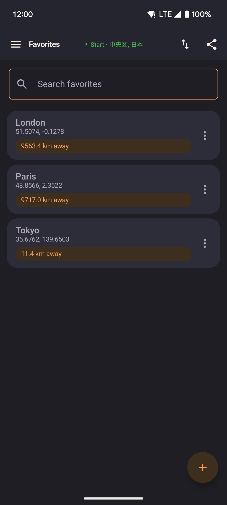
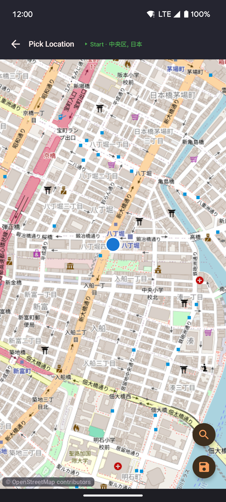

Favorites
Save named positions and jump to any of them instantly. Favorites appear in both the Favorites screen and in the map's favorites sheet for quick access without leaving the map.

- Tap a favorite to walk or teleport to that location immediately.
- Long-press a favorite to rename or delete it.
- Add a favorite by entering coordinates directly or by picking a point on the map.
Map picker
When adding a favorite "from map", a full-screen map opens. Tap to place a pin, or use the Nominatim search to find a location by name.

- Search by place name to jump the map to a specific address or landmark.
- Tap the map to move the pin to any exact coordinate.
- Confirm to save with a name of your choice.